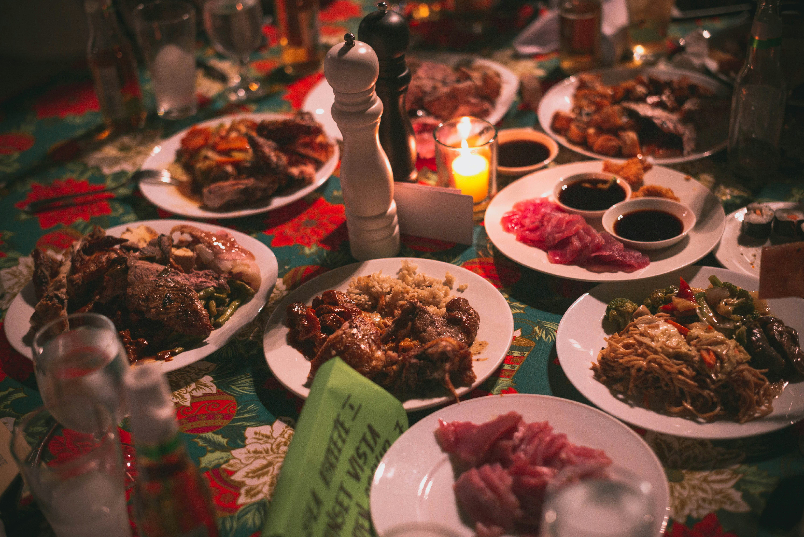
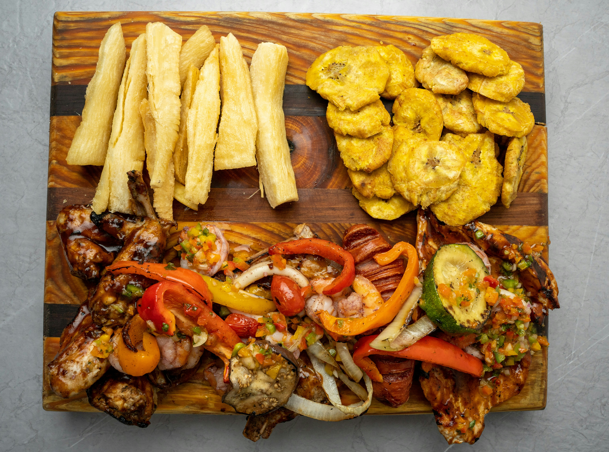
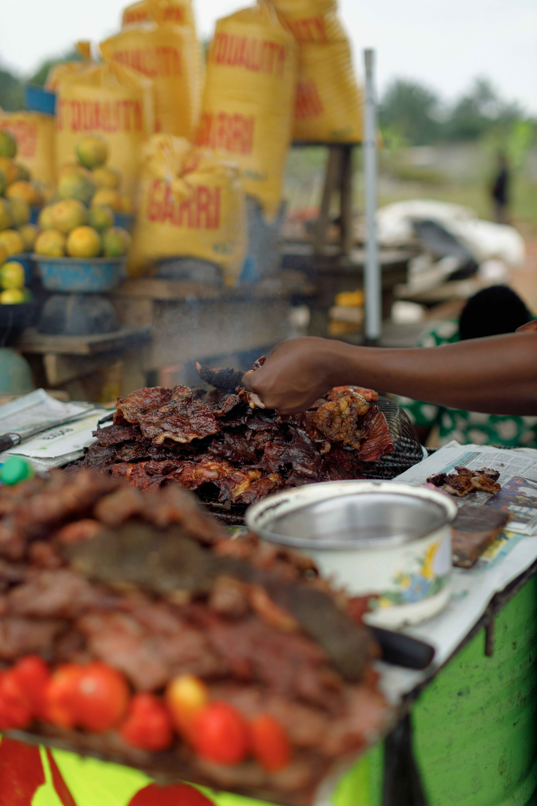

Kingston Eats is the best site if you want to find delicious restaurants around the city. From jerk stops, international cuisine to seafood by the water, every place is chosen for its food and its character. See what is open, learn a little about each restaurant, and request a table in a minute.
Found a place you like? Send a table request with the date you would like and party size.
Reserve a table